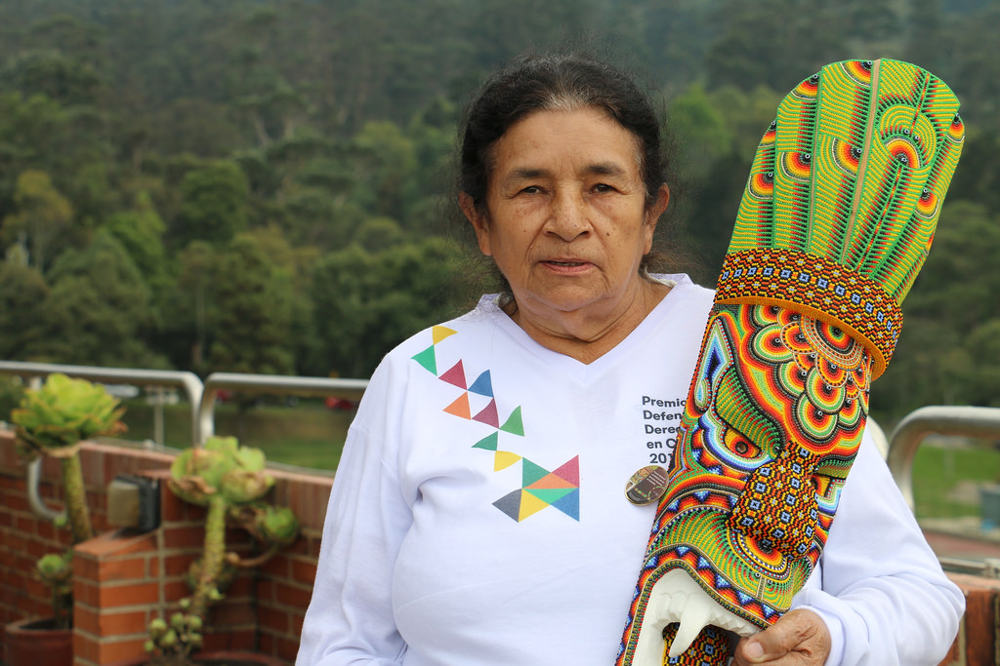
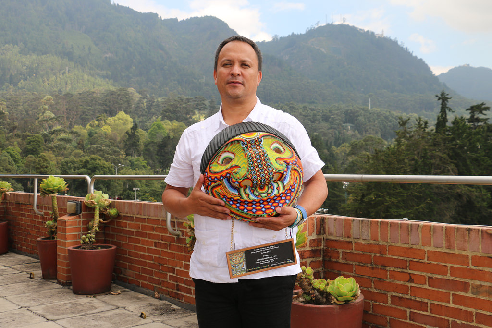
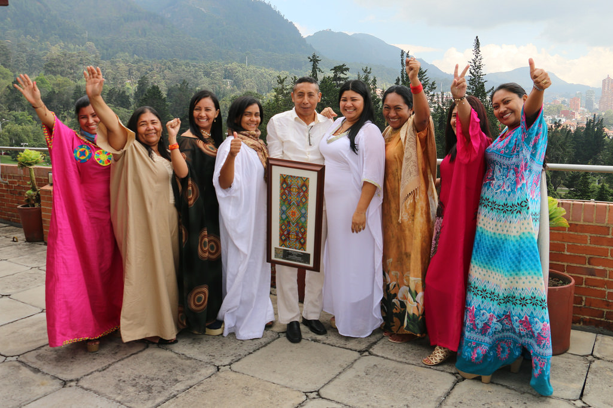
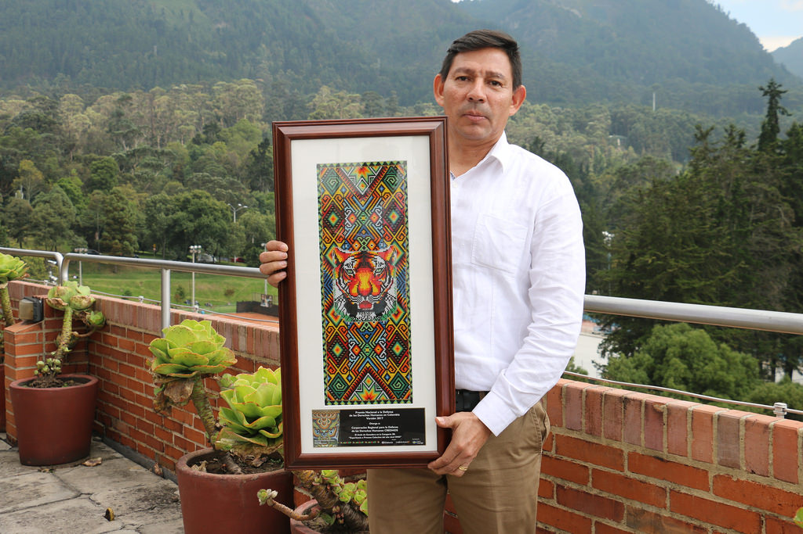

Cuatro líderes sociales son reconocidos por su labor en Colombia
Los líderes sociales en Colombia, a pesar del miedo y la persecución, siguen trabajando con fortaleza por cada una de las causas que defienden. Su trabajo es reconocido por la organización Diakonia y la Iglesia Sueca con el Premio Nacional a la Defensa de los Derechos Humanos.
El jurado, integrado por 18 personas nacionales e internacionales entre las que hay académicos, periodistas e intelectuales involucrados con la defensa y promoción de los derechos humanos, fueron los encargados de preseleccionar a los finalistas y otorgar el premio a los cuatro ganadores.
Socorro Aceros Bautista: Reconocimiento a toda una vida
Socorro trabaja en la promoción y la defensa de los derechos humanos, acompañando en especial a las víctimas del paramilitarismo del municipio de Tame, departamento de Arauca. Participó en la creación de la Asociación de Productores y Comercializadores Agropecuarios de Flor Amarillo -APOCAFLOR- y la coordinadora del comité de Salud de la Junta de Acción Comunal del municipio de Tame. Socorro fue desplazada luego de que asesinaron a su hijo. Sobrevivió al genocidio de la Unión Patriótica y desde entonces ha sido señalada y perseguida.
“Mi lucha es por los derechos de los niños y de las personas menos favorecidas”, comenta Socorro a Datasketch. Su llamado lo sintió a los 28 años cuando quedó viuda y con 5 niños: el más grande tenía 10 años y el más pequeño 17 meses. “Mi papá sufría de anemia tropical, yo como había sido enfermera me entregué a la enfermería pero en el campo, a cuidar de las señoras embarazadas, a atenderlas y a cortar ombligos, en mi cuenta alcancé a cortar más de 3.000 ombligos. Las mismas enfermeras se iban a que yo le cortara el ombligo a los niños, porque no querían tener un niño en el hospital, querían tenerlo en una casa”. Así empezó Socorro y desde entonces no ha dejado de servir a su comunidad.
Participa activamente en los espacios de justicia y paz, motivando y alentando a los sobrevivientes de víctimas a no guardar silencio y a continuar en la búsqueda de sus familiares desaparecidos. En diferentes espacios le ha exigido al Estado verdad, justicia y reparación integral, enfatizando en las necesidades del desmonte del paramilitarismo y el castigo a los promotores de este flagelo. También apoya y acompaña los procesos que adelantan los indígenas que habita a orillas del Río Cravo, en el municipio de Tame.
Enrique Chimonja Coy: Defensor del año
Es integrante de la Comisión Intereclesial de Justicia y Paz, defensor de derechos humanos en el Valle del Cauca. Realiza acompañamiento a comunidades víctimas de violaciones a los derechos humanos e infracciones al derecho internacional humanitario. Desde la creación de los Espacios Humanitarios en Puente Nayero Buenaventura, documenta y denuncia los hostigamientos a la población civil, presencia y confrontación de grupos armados. Lidera procesos contra despojo de tierras y lucha contra la impunidad, logrando el otorgamiento de medidas cautelares de la Corte Internacional de Derechos Humanos que busca proteger a comunidades afrocolombianas e indígenas.
Asociación Sütsuin Jiyeyi Wayúu: Experiencia o proceso colectivo del año
La organización fue creada en el año 2006 mediante alianzas entre comunidades, rancherías y organizaciones Wayúu. El objetivo es la de visibilizar las violaciones a los derechos humanos y derechos étnicos en el departamento de La Guajira, así como analizar la situación de vulnerabilidad de las víctimas del conflicto armado, la presencia de grupos armados, y la militarización del territorio. La Asociación Fuerza de Mujeres Wayúu trabaja en la denuncia de los megaproyectos minero energéticos, el desplazamiento forzado y la situación de vulneración de derechos de las mujeres indígenas.
“Las mujeres del movimiento decidimos olvidar nuestro dolor y emprender procesos y luchas por el dolor de otras personas”, comenta Deris Paz, integrante de la organización. “Sabíamos que habían más mujeres que podían ser víctimas de todo este dolor y decidimos hacer un acompañamiento más integral a las mujeres y mostrarles un camino de lucha en medio de las tristezas y en medio de las vulneraciones de nosotras como mujeres”, agrega.
Corporación Regional para la Defensa de los Derechos Humanos (CREDHOS): Experiencia o proceso colectivo del año
CREDHOS fue fundada en 1987 como instrumento para la promoción, defensa y protección de los derechos humanos, la democracia, el derecho internacional humanitario, la generación de acciones y escenarios para el entendimiento, la tolerancia, la convivencia y la paz a favor de la población y sectores sociales vulnerables y victimizados de Barrancabermeja y el Magdalena Medio.
Todas las imágenes mostradas en este artículo son propiedad del sitio web http://www.premiodefensorescolombia.org/